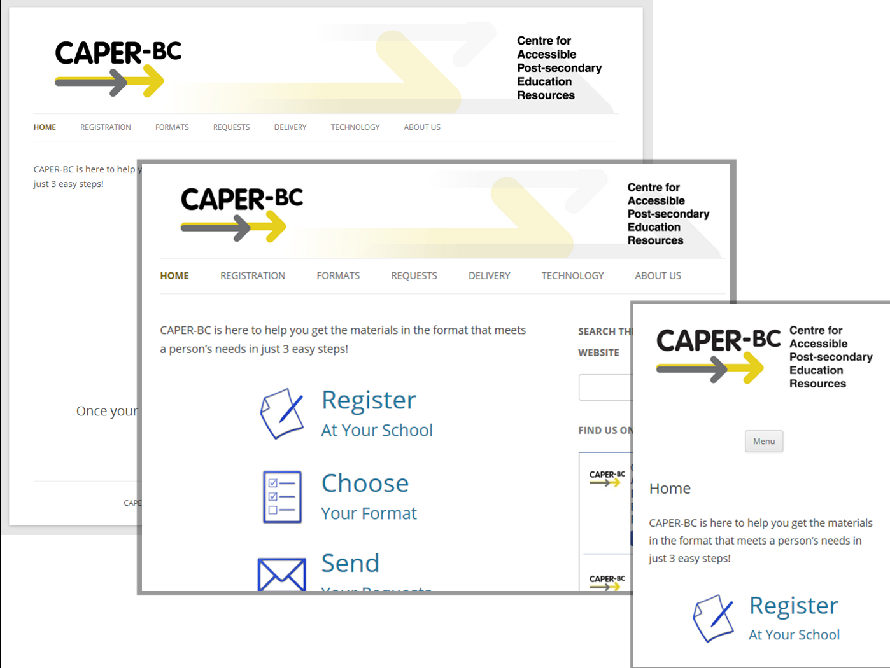

Accessibility is About Your Users
Cynthia Ng
@TheRealArty
October 9, 2015
Introduction
 De Clerck, Stefaan. (2015). Sleeping beauty. https://500px.com/photo/121896277/sleeping-beauty-by-stefaan-de-clerck CC BY-NC-SA 3.0
De Clerck, Stefaan. (2015). Sleeping beauty. https://500px.com/photo/121896277/sleeping-beauty-by-stefaan-de-clerck CC BY-NC-SA 3.0
70 slides in 20 minutes
= 3.5 / minute
Definition
Web accessibility means that people with disabilities can use the Web.W3C Web Accessibility Initiative. (2005). What is Web Accessibility. Introduction to Web Accessibility. http://www.w3.org/WAI/intro/accessibility.php- W3C Web Accessibility Initiative (WAI)
 Snape, John. (2011). See No Evil, Hear No Evil, Speak No Evil. https://commons.wikimedia.org/wiki/File:See_No_Evil,_Hear_No_Evil,_Speak_No_Evil.jpg CC BY-SA 3.0
Snape, John. (2011). See No Evil, Hear No Evil, Speak No Evil. https://commons.wikimedia.org/wiki/File:See_No_Evil,_Hear_No_Evil,_Speak_No_Evil.jpg CC BY-SA 3.0
Types of Disabilities
- visual
- auditory
- physical/motor
- touch
- learning
Numbers
or Why Should You Care?
 Statistics Canada. 2013. Statistics Canada on Twitter. https://twitter.com/StatCan_eng/statuses/407940135729508352
Approximate number based on: World Bank. 2012. Population ages 15-64 (% of total). http://data.worldbank.org/indicator/SP.POP.1564.TO.ZS.
Statistics Canada. 2013. Statistics Canada on Twitter. https://twitter.com/StatCan_eng/statuses/407940135729508352
Approximate number based on: World Bank. 2012. Population ages 15-64 (% of total). http://data.worldbank.org/indicator/SP.POP.1564.TO.ZS.
 Brault, Matthew W. (2012). Americans With Disabilities: 2010 Household Economic Studies. http://www.census.gov/prod/2012pubs/p70-131.pdf
Brault, Matthew W. (2012). Americans With Disabilities: 2010 Household Economic Studies. http://www.census.gov/prod/2012pubs/p70-131.pdf
Disability > Minority*
* Based on 2006 Canadian census percentage of total population ages 15-64 with a disability, and the percentage of total population ages 15-64 of minorities. * Based on 2010 US census percentage of total population with a disability, and the percentage of total population of minorities.Policy & Legislation
Canada: Federal Departments & Ontario: Web Content Accessibility Guidelines (WCAG)
USA: Americans with Disabilities Act; Federal Departments: Rehabilitation Act: Section 508
Lack of statutes or federal laws should not exempt [us] from providing equivalent access to all; it should drive [us] toward it.Fulton, C. (2011). Web Accessibility, Libraries, and the Law. Information Technology and Libraries.. http://www.w3.org/WAI/intro/accessibility.php- Camilla Fulton
Getting Buy-in
Benefits
- reflect institutional mission, leadership, and values
- serve all users
- make sound fiscal policy
- add value to the institution
Benefits Simplified
- findable
- accessible
- usable
- shareable
- efficient
- collaborative
Designing for Assistive Technology
Defining Assistive Technology
an umbrella term that includes [...] devices for people with disabilities [...] by enabling people to perform tasks that they were formerly unable to accomplish, or had great difficulty accomplishing, by providing enhancements to, or changing methods of interacting with, the technology needed to accomplish such tasks.Multiple authors. (2015). Assistive Technology. Wikipedia.- Wikipedia
 Anonymous. (2013). Untitled. As permitted by TOS
Anonymous. (2013). Untitled. As permitted by TOS
Considering Assistive Technology
- screen readers
- text-to-speech
- screen magnifiers
- joysticks
 From: Gibson, Anne. (2015). Reframing Accessibility for the Web. With permission from author
From: Gibson, Anne. (2015). Reframing Accessibility for the Web. With permission from author
 Fitzgerald, Michael. (2008). Computer Budgie II. CC BY-NC-SA 2.0
Fitzgerald, Michael. (2008). Computer Budgie II. CC BY-NC-SA 2.0
 Fuster, Anna. (2011). perimer l'un hi dezcansa a sobre... CC BY-NC-ND 2.0
Fuster, Anna. (2011). perimer l'un hi dezcansa a sobre... CC BY-NC-ND 2.0
All Technology is Assistive Technology.Hendron, S. (2013). All Technology is Assistive Technology: 6 dispositions for designers on disability.- Sara Hendren @ablerism
We need to change the way we talk about accessibility. … We can reframe accessibility in terms of what we provide, not what other people lack.Gibson, Anne. (2015). Reframing Accessibility for the Web.- Anne Gibson @kirabug
Universal Design
 marziarh. (2012). Robson Square. https://www.flickr.com/photos/maziarh/7216119402/ CC BY-NC-ND 2.0
marziarh. (2012). Robson Square. https://www.flickr.com/photos/maziarh/7216119402/ CC BY-NC-ND 2.0
Universal Design for the Web
Universal Web Design Principles in Short
- solid
- clear
- helpful
- usable
- accessible
- easy to understand
- designed with people in mind first
Universal Design in Practice
Major Challenges
Shneiderman, B., & Hochheiser, H. (2001). Universal usability as a stimulus to advanced interface design. Behaviour & Information Technology, 20(5), 367-376. doi:10.1080/01449290110083602 animoca. (2012). All the Myriad Androids. http://www.animoca.com/en/2012/05/all-the-myriad-androids/ CC-BY-ND 3.0
animoca. (2012). All the Myriad Androids. http://www.animoca.com/en/2012/05/all-the-myriad-androids/ CC-BY-ND 3.0
 Habib, Fady. (2005). Unity in Diversity. CC BY-NC-SA 3.0
Habib, Fady. (2005). Unity in Diversity. CC BY-NC-SA 3.0
 Trott, Nic. (2012). Clifton Suspension Bridge. CC BY 2.0
Trott, Nic. (2012). Clifton Suspension Bridge. CC BY 2.0
Approaches
Minimal Load Time
average website = 2.2 MB = 6 sec
HTTP Archive. (2015). Average Bytes per Page by Content Type. Keynote. (2015). Performance Index: Mobile Commerce (Retail) – US.[Over 50% of mobile users] will wait only five seconds or less for a mobile site to load.Compuware Corporation. (2011). The new (or only) way to connect with customers. http://www.compuware.com/content/dam/compuware/professional-services/white-papers/The%20New%20or%20Only%20Way%20To%20Connect%20With%20Customers.pdf
Two seconds may not seem like a long time, but consider that users can spot—and are bothered by—performance delays as short as 300 milliseconds.Jehl, Scott. (2014). Planning for Performance.- Scott Jehl @scottjehl
Progessive Enhancement
Worry about the less capable first.Usobiaga, J. (2013). Slide 37. Mobile First: As difficult as doing things right. https://speakerdeck.com/swwweet/mobile-first-as-difficult-as-doing-things-right?slide=37- @Swwweet
Mobile First
Mobile forces you to focus.Wroblewski, L. (2009). Mobile First. http://www.lukew.com/ff/entry.asp?933- Luke Wroblewski @lukew
Responsive Design
Resources:
"Special" Considerations
Colour Contrast
Keyboard Accessibility

Forms
Skip Links
Media
- Images: alt=""
- Audio: transcript
- Video: transcript
- Video: captions
- Video: descriptive audio
Top 10 Academic Library Websites
6 / 10 have carousel
5 / 6 autoplay
Singley, E. (2014). Top 10 Academic Library Websites.Top 10 of 20 Great Public Library Websites
9 / 10 have carousel
9 / 9 autoplay
Anderson, M. (2013). 20 Great Public Library Websites. http://www.mattanderson.org/blog/2013/02/11/20-great-public-library-websites/Documents

 WebAIM. (2014). Microsoft Word. http://webaim.org/techniques/word/
WebAIM. (2014). Microsoft Word. http://webaim.org/techniques/word/ © WebAIM. Used under full credit, at no cost allowance as per the WebAIM Copyright & Terms of Use. WebAIM. (2014). PowerPoint Accessibility. http://webaim.org/techniques/powerpoint/
© WebAIM. Used under full credit, at no cost allowance as per the WebAIM Copyright & Terms of Use.
Testing and Assessment
Evaluation Tools
- HTML Codesniffer (bookmarklet)
- WCAG Contrast Checker (Firefox plugin)
- WAVE Toolbar
- For more, W3C Web Accessibility Tools list
Simulation Tools
Developer toolbars, semantic markup and automated testing tools can only get you about 30% of the way towards Web Accessibility goals.Boudreau, Denis & Feldman, Matt. (2015). Slide 13 of Integrating Accessibility into the Project Lifecycle - Lessons Learned.- Denis Boudreau @dboudreau & Matt Feldman @hlpsom1
Ask Your Users
Training and Documentation
We need to make simple, readable, effective content.Gibson, Anne. (2014). An Alphabet of Accessibility Issues.- Anne Gibson @kirabug
Guidelines for Content Creators
- Use headers properly
- Use descriptive links
- Use tables for data, not layout
- Describe images if needed
- If you embed audio/video, add a link to it too
 Alexander, Dey. (2014). Text alternatives for images: a decision tree.
Alexander, Dey. (2014). Text alternatives for images: a decision tree.
Other Guideline Examples and Resources
More Resources
General Resources
- WCAG Quick Reference
- The Paciello Group Blog - a lot of great articles on focused on accessibility and HTML/CSS
- The Accessibility Project - lots of quick tips
- Canadian Guidelines on Library and Information Services for People with Disabilities (out of date, currently being revised) by CLA
- Accessibility Information Toolkit for Libraries by OCUL
Even More Resources
Lists of Accessibility Resources:
Take Away
Websites are software that help people accomplish their goals, regardless of the hardware and software combination, regardless of the shapes and forms of their people. That is accessibility.Gibson, Anne. (2015). Reframing Accessibility for the Web.- Anne Gibson @kirabug

{kind=link}